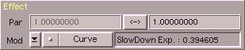

This area is for adjusting modulatable parameter in SoundFX. In the first
row you set start and end values. The '<->' button lets you swap both values.
Now a few words to the parameter themselfs. SIn ce version 3.4 you can use real units in SoundFX.
E.g. you want to use Amplify to make something sound twice as loud, then you can use the
following parameter variations:
| example | description |
|---|
| 2.0 | factor |
| 200 % | absolute, per cent |
| 2000 %% | absolute, per thousand |
| + 100 % | relative, per cent |
| + 1000 %% | relative, per thousand |
| + 6 db | relative, decibel |
As you can see - there are lot of possibilities. Below the units currently known to SoundFX
(contact me if you need more) :
| group | description | |
|---|
| amplitude | factor | value |
| | absolute, per cent | value % |
| | absolute, per thousand | value %% |
| | relative, per cent | +/- value % |
| | relative, per thousand | +/- value %% |
| | relative, decibel | +/- value db |
| | absolute, level | value lv |
| relative frequency | factor | value |
| | absolute, per cent | value % |
| | absolute, per thousand | value %% |
| | relative, per cent | +/- value % |
| | relative, per thousand | +/- value %% |
| | relative, semitones | +/- value st |
| | relative, cents | +/- value ct |
| | relative, semitones & cents | +/- value:value st:ct |
| absolute frequency | herz | value hz |
| | tone | note -/# oktave (e.q. C-3, E#2) |
| relative time | factor | time |
| | absolute, per cent | value % |
| | absolute, per thousand | value %% |
| | repeats | value rpts |
| absolute time | hour | value h |
| | minute | value m |
| | second | value s |
| | millisecond | value ms |
| | second & millisecond | value:value s:ms |
| | minute & second | value:value m:s |
| | hour & minute & second | value:value:value h:m:s |
| | ... I think you've got the idea |
| | samples | value sv |
| | movie frames (24 fps) | value mf |
| | PAL-video frames (25 fps) | value pf |
| | NTSC-video frames (30 fps) | value nf |
| proportion | factor | value |
| | absolute, per cent | value % |
| | absolute, per thousand | value %% |
| count | absolute | value |
| | relative | +/- value |
| phase/angle | factor | value |
| | absolute, per cent | value % |
| | absolute, per thousand | value %% |
| | degree | value ° |
| | minutes | value ' |
| | seconds | value " |
| | minutes & seconds | value:value ':" |
| | ... and so on |
| | radian | value rad |
| | english degree | value grd |
Not all of these units could be used for all parameter and otherwise sometimes
you can use a unit which is unusual for that parameter. The latter case is mentioned
in the the apparent description of the operator.
The second row : When coding SoundFX I wanted to make it as variable (flexible) as possible. The
user should be able to access and edit all the parameters in a way either as simple or complex as he/she desires.
This led to the development of the 'Blend Shapes'. These are curves (or graphs) that modulate a parameter.
A 'Blend Shape' always returns values ranging 0.0 - 1.0. This way it can vary a parameter from its start to it
end value. The start value gets used at modulation=0.0 and the end value at modulation=1.0.
The following variations are implemented :
| variant | description |
|---|
| none | This shape returns in every case a value of 0.0 (if you dont
want to modulate something). If you use this enter the value in
the first field - the second will be ignored. |
| curve | bended course |
| cycle | oscillation |
| vector | envelope |
| user | user defined |
Examples say more than thousand words. Here are a few for the Amplify-operator :
| example | description |
|---|
| 1 | Youd like to amplify the volume of the sample by 5%.
Par.0 : 105 % (100%+5%)
Par.1 : doesn't matter
Mode : None |
| 2 | You want to amplify the sample to 10% at the start and lower to 60% in
the end AND the volume change should accelerate to the end.
Par.0 : 110 % (100%+10%)
Par.1 : 60
Mode : Curve, Exp="2.0" |
| 3 | You'd like to produce a tremolo effect (cyclic change of volume -
"Helicopter" effect).
Par.0 : 120 %
Par.1 : 80 %
Mode : Cycle, Sin, Frequency, Frq="1 Hz" |
|